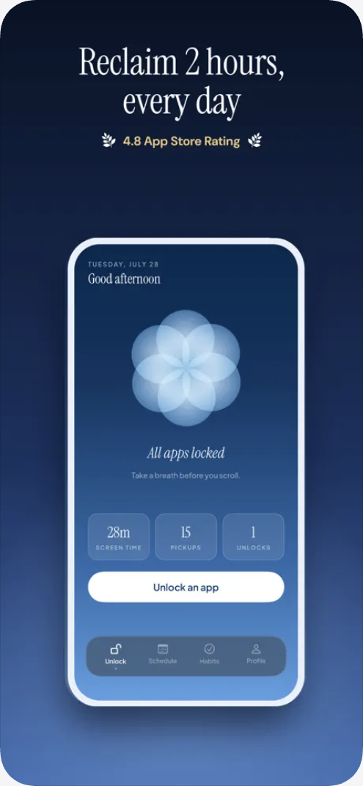
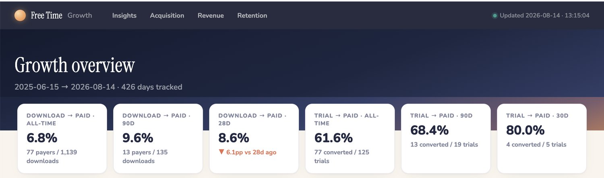
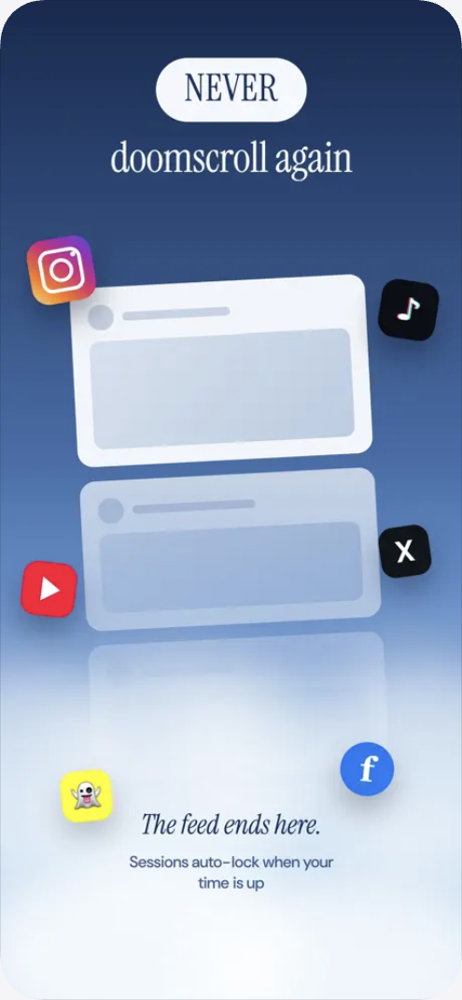
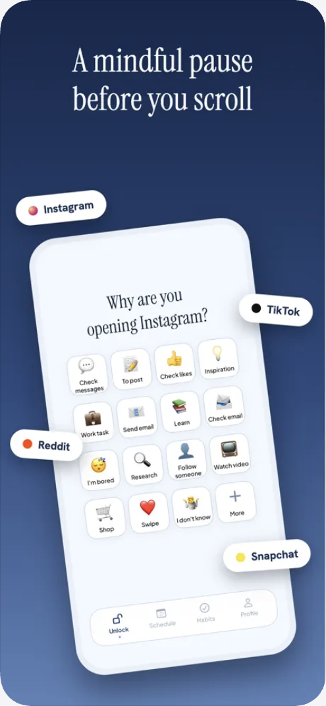
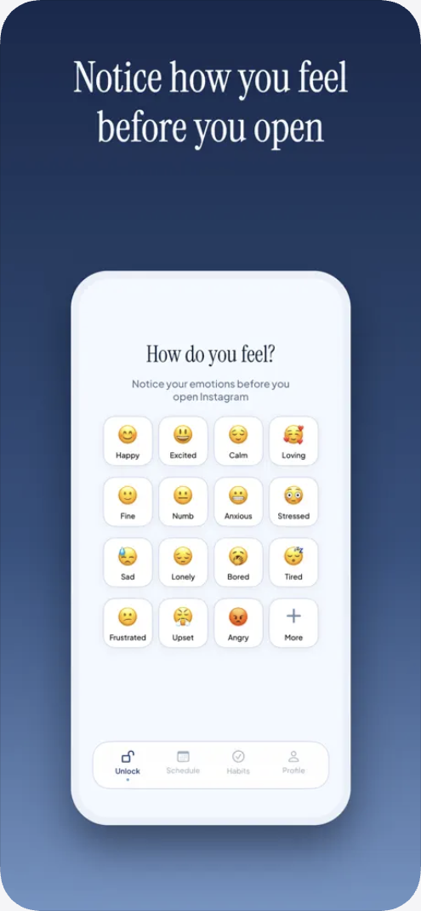

Free Time
An app that helps you use your phone mindfully.
- Role
- Founder & Product Owner
- Timeline
- Nov 2025 → present
- Platform
- iOS · App Store
- Team
- Solo. I designed, built, and shipped it
- Outcome
- 61.6% trial to paid · 6.8% download to paid · 4.8★
In short
- ProblemGetting someone to start a trial is the hard part. Everything I could charge for sat behind Apple's Screen Time permission, a system dialog that arrives mid-onboarding and asks for a lot of trust before the product has done anything.
- ApproachI instrumented the whole funnel in Mixpanel first, joined it to RevenueCat subscription state and App Store Connect acquisition, then ran paywall experiments against it in RevenueCat: price points and subscription tiers, and paywall design variants.
- ResultTrial to paid runs 61.6% all-time and download to paid 6.8%, rising to 9.6% over the last 90 days. The gap between those two numbers is the case: starting the trial is the hard part, and once someone does, the product mostly sells itself.
What Free Time is
Free Time blocks the apps you keep opening without meaning to, then asks you to do something small before it lets them back in. Breathe. Unscramble a word. Type out why you're opening Instagram right now. It takes about fifteen seconds, and fifteen seconds is usually enough to remember you didn't actually want to be there.
I built it because I was losing hours a day to my own phone, and every blocker I tried was either trivial to bypass or so punishing I deleted it within a week. I wanted the version that assumes you're an adult who is going to slip up anyway.
The hardest moment in the product
None of it works without Apple's Screen Time authorization, and Apple deliberately makes that dialog feel consequential. It should: the user is handing an app the power to control their phone.
So the hardest moment in the product arrives before the product has done anything. A new user has downloaded something on a hunch and is immediately asked for a permission that sounds like surveillance. Everything I could measure downstream sat behind that one screen: activation, retention, subscription.
What I instrumented, and what it told me
Before changing the flow I made it legible. Mixpanel events on every onboarding step, every permission outcome, and every feature in the app; RevenueCat for subscription state; App Store Connect for acquisition. The first useful thing the data did was correct me about where the leverage was.
I had assumed the job was reach, that I just needed to get in front of more people. The referral data said the opposite. The channels sending the fewest people were converting at rates an order of magnitude above what social traffic normally does, while broad reach converted at almost nothing.
App Store impression → download, by channel
Free Time referral data. Shown as conversion rate; the reference band is the typical range for social traffic to an app listing.
The AI-search figure is the one I did nothing to earn: it has arrived every month since December at roughly the same rate, with no posting behind it.
One place to read all of it
Activation lived in Mixpanel, revenue in RevenueCat, and acquisition in App Store Connect, so no single tool could answer whether a cohort converted. I built a dashboard that joins all three. It has been tracking for 426 days, and it is the thing I actually open.

The funnel I was actually managing
Instrumenting the whole path, rather than just the app, made the shape of the problem clear. Acquisition and onboarding are not two teams' problems here; they are one funnel, and the permission step is the wall in the middle of it.
Experimenting on price
Once the funnel was legible I could start changing what it charged. I run paywall experiments in RevenueCat on two axes: the offer itself, meaning price points and how the subscription tiers are framed against each other, and the paywall as a piece of design, meaning layout, sequence, and which proof a person sees before the price.
Having the instrumentation first is what makes any of this readable. A paywall test that moves a number is only useful if you can say which cohort moved and whether they stayed, and that answer lives across three tools. Because they are joined, a result is a question I can actually answer rather than a chart I have to argue about.
The build is not always cooperative. RevenueCat's Paywalls V2 has a Timeline component that the iOS SDK will not render, and rather than erroring it silently falls back to the default paywall, so the variant I thought I was testing was not the variant anyone saw. I rebuilt the same layout out of Stack, Icon, and Text components. Knowing the tool well enough to catch a silent fallback is part of owning the surface.
Decisions and tradeoffs
Redesigning onboarding on intuition. Testing the paywall first, where the money is.
With one solo build cycle and App Store review between every iteration, a wrong guess costs weeks rather than hours. Measurement was the cheapest thing I could ship, and it turned out to disagree with me.
Checking three tools separately. Buying an off-the-shelf analytics product.
Activation lived in Mixpanel, revenue in RevenueCat, acquisition in App Store Connect. No single tool could answer "did this cohort convert," so for months nobody asked. Joining them made the question routine.
Paid ads. Simply posting more often.
Downloads collapsed every time I stopped posting, while AI search delivered at a steady rate on its own. One is an asset that compounds; the other is a treadmill that stops when I do.
What shipped
The ritual is the product. Apps stay blocked until you do something small and deliberate, and varying what that something is keeps it from turning into a button people learn to tap through without noticing. The one users quote back to me most is the plainest: it asks why you're opening the app, and you have to answer.



Results
This app cut my screen time from 9 hours a day to 2.5 hours.
Hope W., App Store review
What I'd do next
Two things. Move the permission ask later, after the user has named the apps they want blocked, so they commit before I quote the price. And build a proper cohort view so retention is readable by acquisition channel rather than only in aggregate, because the channel data strongly suggests those users are not the same people.